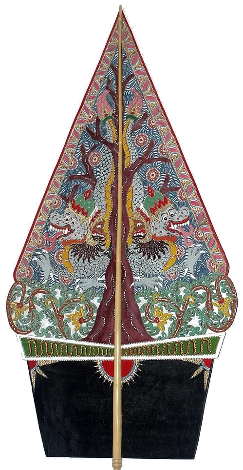

Tanah & Batuan Asal
Geologi & Bentang AlamBatu karst Gunungkidul, abu vulkanik Merapi, atau tanah aluvial sungai Bantul. Semua rasa bermula dari mineral dan air yang diserap bumi.
Lihat narasi langkah ini →

Untuk memahami rasa, kita perlu berjalan lebih pelan. Mendekat pada asal tanahnya, dan tinggal sebentar bersama orang-orang yang menjaganya.
Batu karst Gunungkidul, abu vulkanik Merapi, atau tanah aluvial sungai Bantul. Semua rasa bermula dari mineral dan air yang diserap bumi.
Singkong gaplek kemarau, manggar kelapa muda, koro benguk liar, hingga daun pisang kluthuk. Alam memberi secukupnya pada waktu yang tepat.
Bukan resep tertulis di buku, melainkan hafalan indrawi lintas generasi. Tumbukan alu kayu, sentuhan jemari, dan rasa hormat pada sesama.
Tungku kayu akasia, kuali tembaga, dan periuk tanah liat. Api kecil yang menyala 48 jam membuktikan bahwa kelezatan sejati menolak tergesa-gesa.
Sarapan di lincak bambu sebelum menyiangi sawah, kenduri wiwitan panen, atau jamuan hangat saat sanak saudara pulang dari perantauan.
Aroma sangit asap kayu bakar, legit karamel gula jawa, gurih rempah kencur, dan rasa tenang yang membekas lama setelah suapan terakhir selesai.
Dapur Gudeg KLA menghadirkan cita rasa gudeg basah tradisi Yogyakarta ke meja makan Anda. Diolah dengan kesabaran api kayu dan racikan bumbu rempah leluhur, merawat rindu dan kehangatan rasa rumah di perantauan.